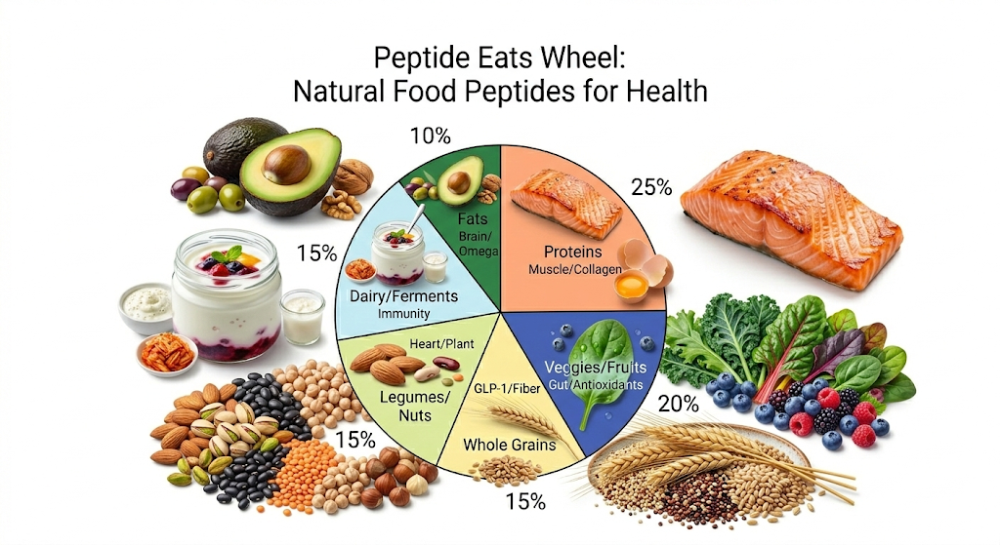
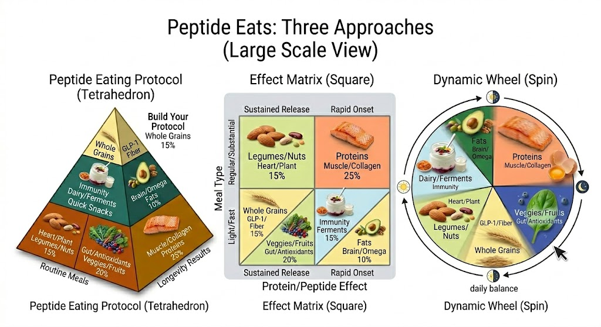

Natural food peptides for health. Six food groups linked to peptide-like effects—muscle repair, gut health, brain support—without injections. Based on Harvard/2026 guidelines: prioritize plants and protein, rotate sources.

Spin the wheel for daily balance. Each wedge links food groups to peptide-like benefits.
Each food group delivers bioactive compounds that mimic or support peptide pathways—no needles required.
Eggs, fish, lean meat, legumes. Collagen and GLP-1 builders for muscle repair and weight support.
Leafy greens, berries. Bioactive peptides for antioxidants and inflammation—similar pathways to BPC-157 gut repair.
Oats, quinoa, barley. Fiber peptides trigger GLP-1-like effects—the same pathway Ozempic targets.
Beans, almonds, lentils. Plant peptides for heart health and longevity.
Yogurt, kefir, kimchi. Probiotic peptides for gut immunity.
Avocado, olive oil, walnuts. Omega-3 peptides for brain and longevity.
Pick the model that fits how you think—pyramid, matrix, or wheel.

Stack Quick Snacks → Routine Meals → Longevity Results. Build your protocol layer by layer.
Protein/Peptide Effect vs. Meal Type. Match sustained release or rapid onset to regular or light meals.
Spin for daily balance. Rotate through all six wedges—sun to moon, morning to night.
Take the Food-First Plan quiz and we’ll recommend which wedges to prioritize for your goals.
Get My Food-First Plan